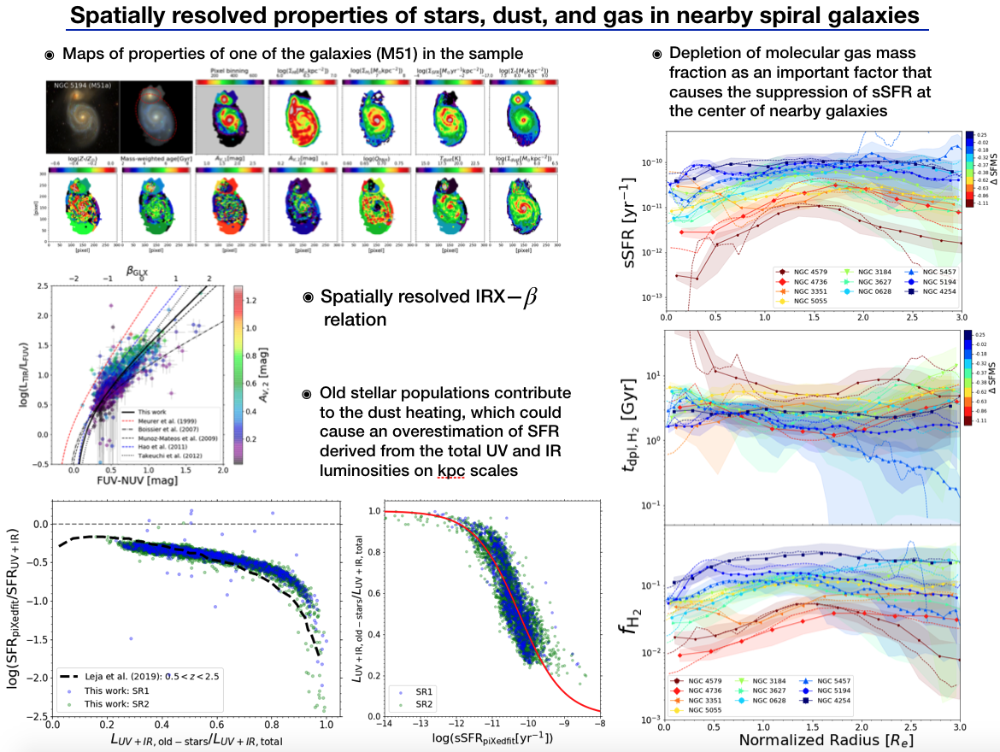
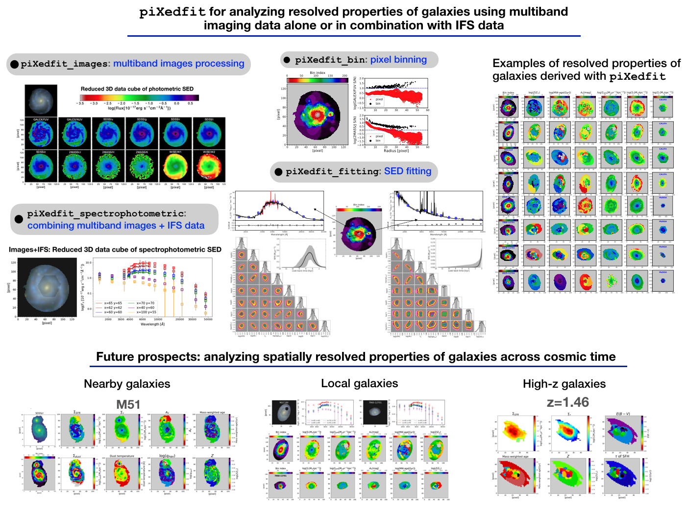
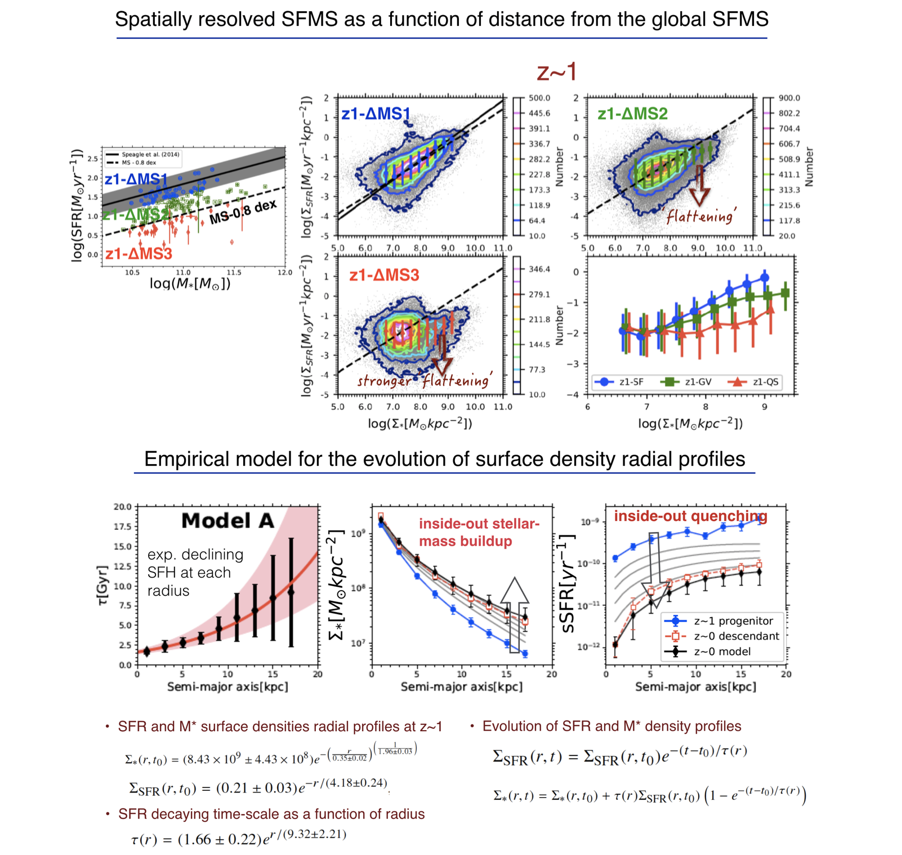
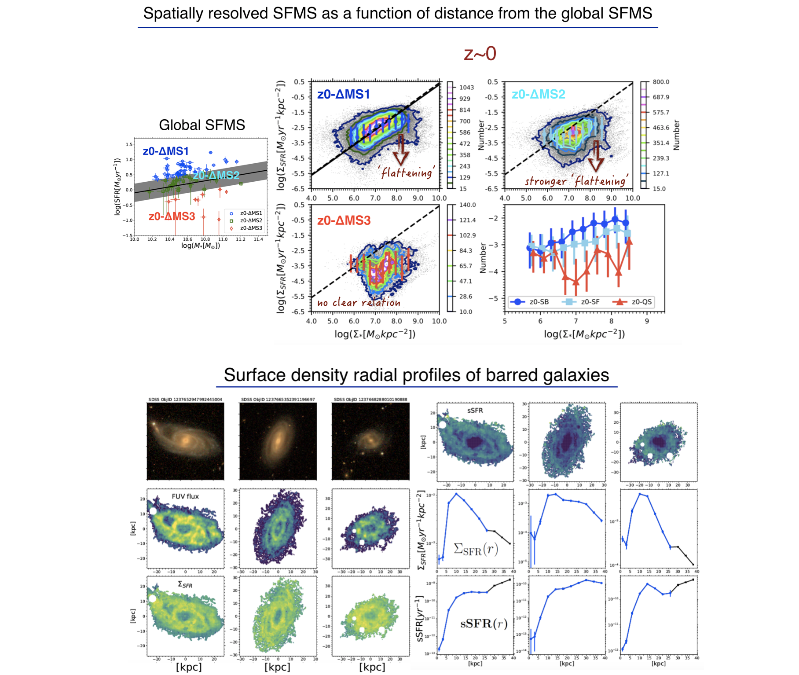

I am working on extragalactic astrophysics, with emphasis on the galaxy formation and evolution. I am interested in studying how galaxies assembled their structures over the last ~12 billion years, and how the diversity in galaxies structures and properties we see in the present-day universe came about. In my researches, I mainly use multiwavelength imaging data ranging from the far-ultraviolet to far-infrared and the integral field spectroscopy (IFS) data for analyzing spatially resolved properties of the galaxies across a wide range of cosmic time (i.e., redshift). For this, I have developed a versatile software called piXedfit which capables of analyzing the spatially resolved spectral energy distribution (SED) of galaxies and derive the properties on sub-galactic scales. This tool can take input in the form of imaging data alone or the combination of imaging and IFS data. The imaging data that I have been using for my researches come from various spaced- and ground-based telescopes, including the GALEX, SDSS, 2MASS, WISE, Spitzer, Herschel, and HST. The IFS data that I have been using come from the MaNGA and CALIFA surveys. I am excited by the huge research opportunities that will be possible by the advent of the future telescopes, such as the JWST, Euclid, Vera Rubin Observatory, and Roman Space Telescope.
I got my Bachelor degree in physics from the Brawijaya University in 2013. After that I went to the Astronomical Institute in Tohoku University for graduate school. I obtained my Master degree in 2015 and Doctor degree in 2018. Since then I move to the Academia Sinica Institute of Astronomy and Astrophysics (ASIAA) for my first postdoc. In Fall 2022, I moved to the Department of Phyiscs and Astronomy, The Johns Hopkins University (JHU) for my second postdoc. For more information, please find my CV here. Full list of my publication can be found at ADS.
.
In case you find my single-word name very strange, like many Indonesian people, I have a single-word name. There is an interesting article written by Indonesian scientists discussing about this issue in academia.
.
Selected recent works

Dissecting Nearby Galaxies with piXedfit: I. Spatially Resolved Properties of Stars, Dust, and Gas as Revealed by Panchromatic SED Fitting
In Abdurro'uf et al. (2021b), we use piXedfit for measuring spatially resolved properties (on spatial scales of 1-2 kpc out to at least 3 effective radii) of the stellar populations and dust in 10 nearby spiral galaxies. One of the unique strengths of this study is the application of the energy balance approach for fitting the spatially resolved FUV--FIR SEDs in the kpc scales. In our analysis, we also include archival high spatial resolution maps of atomic and molecular gas to complete the analysis on the baryonic components (stars, dust, and gas) of the galaxies. With this self-consistent analysis, we study various aspects regarding the interplay of the baryonic components in the star-forming and green valley galaxies. Our main results include: (1) the IRX--beta relation in kpc-scales and the finding that this relation is consistent with the relationship that have been found with the integrated photometry; (2) the evidences that old stellar populations contribute to the dust heating, which can cause an overestimation of SFR derived from the total UV and IR luminosities; (3) the evidences showing that a depletion of molecular gas mass fraction is the main factor that causes the suppression of sSFR at the center of the majority of nearby galaxies.

Introducing piXedfit - a spectral energy distribution fitting code designed for resolved sources
In Abdurro'uf et al. (2021a), we present piXedfit, pixelized spectral energy distribution (SED) fitting, a Python package that provides tools for analyzing spatially resolved properties of galaxies using multiband imaging data alone or in combination with integral field spectroscopy (IFS) data. Motivation: Despite the fact that galaxies are extended objects, the majority of studies over the past decades have only utilized their integrated light, particularly for SED fitting. While the advent of IFS surveys have enabled the studis of resolved properties of galaxies, however, the wide-area IFS surveys have been mostly targeting local galaxies because such surveys for high redshift galaxies are prohibitively expensive. As demonstrated in our previous research (Abdurro'uf & Akiyama 2017, 2018) and in other related researches by other people, we can apply SED fitting method to spatially resolved SEDs of galaxies to study resolved properties of the galaxies. Supported by the current and future abundance of high spatial resolution and deep multiband imaging data, this spatially resolved SED fitting can be a good alternative way for studying resolved properties of a large number of galaxies across wide range of redshift. piXedfit capabilites: With its 6 modules, piXedfit can handle all tasks in the spatially resolved SED fitting, including images processing, a new capability of combining imaging data and IFS data, pixel binning, and SED fitting. Testing results: We have been testing piXedfit in various ways. When tested with mock SEDs of IllustrisTNG, piXedfit can recover properties and SFHs of the simulated galaxies well. We have tested piXedfit using real data consistting of 12-band imaging data (from GALEX, SDSS, 2MASS, and WISE) and IFS data from the MaNGA and CALIFA surveys. By fitting only spatially resolved photometric SEDs, piXedfit can predict the spectral continuum, Dn4000, H-alpha emision, and H-beta emission well. The SFR from piXedfit is consistent with the SFR derived from H-alpha emission. Future prospects: We will apply piXedfit to study resolved properties of a large number of galaxies across wide range of redshift (from nearby universe up to z~3).

Inside-out stellar mass (M*) buildup and quenching of massive disk galaxies from the last 10 billion years
In Abdurro'uf & Akiyama (2018), we studied: (1) how spatially resolved (i.e., ~1 kpc scale) star formation main sequence (SR-SFMS) relation evolved since redshift (z)~1, and (2) how massive disk galaxies grow their M* and cease their star formation (SF) activities. This study compile results we have obtained from previous research (Abdurro'uf & Akiyama (2017)) on local galaxies with a new result from our analysis on 152 0.8HST) and apply pixel-by-pixel SED fitting for the new analysis. Overall, we found that: (1) SR-SFMS gradually decreases its normalization with time while also "flatten" its high mass end slope over time, (2) massive disk galaxies tend to grow (i.e., build) their M* and quench their SF activities in an inside-out fashion, (3) the strengthening of the "flattening" in the SR-SFMS is related to radial progression of the M* buildup and SF quenching, (4) finally, we construct a simple empirical model for the evolution of radial profiles (M*, star formation rate (SFR) and specific SFR).

Understanding the scatter in the spatially resolved SFMS of local massive disk galaxies
In Abdurro'uf & Akiyama (2017), we studied: (1) spatially resolved star formation main sequence (SR-SFMS) in local massive disk galaxies and what causes its scatter, (2) how star formation activity varies spatially within barred galaxies. The sample contains 93 massive (log(M*)>10.5) spiral galaxies at redshift 0.01 to 0.02. We spatially-match (in resolution and sampling) of GALEX and SDSS images and perform pixel-by-pixel SED fitting. We develop the pixel-by-pixel SED fitting method in this work. We also develop a new pixel binning scheme that can effectively achieve a certain S/N threshold while accounting for similarity of SED shape among pixels. Overall, we found that: (1) there is a relation between surface densities of SFR and M* in a kpc scale, (2) the scatter of SR-SFMS is caused by at least 3 factors: local spatial variation of sSFR, systematic effect (lowering normalization) by global stellar mass, and the presence of bar causes suppression os sSFR in the very core region of the galaxies, and (3) barred galaxies have systematically lower sSFR in the core regions than non-barred galaxies, while their sSFR are similar inn the outer regions.
{kind=link}
{kind=link}
{kind=link}
{kind=link}